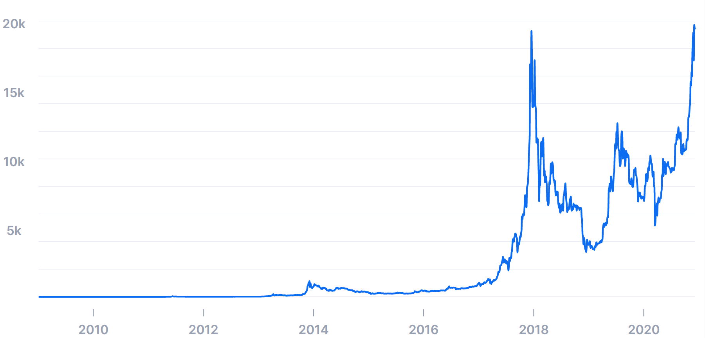

Mineras de Bitcoin se mudan por las restricciones chinas: a dónde van y cómo afecta al precio
Siete de las diez granjas de minería más grandes del mundo se encontraban en China. Gracias a la minería de criptomonedas, las redes se mantienen seguras y este es uno de los motivos que mantiene con cierta estabilidad el precio de los criptoactivos.
Pero, tras las restricciones del gobierno chino, los grandes mineros debieron moverse, produciendo que haya menos minería y, por ende, menos seguridad, y a su vez, afectando negativamente el precio del Bitcoin. Dado que esta es la criptomoneda número uno, es una referencia para el precio de todas las demás.
El nuevo destino para los grandes mineros chinos es Kazajistán, aunque luego de este suceso, el país anunció una nueva ley que aumenta el costo de la electricidad para quienes desarrollen esta actividad en su territorio. Afortunadamente para los inversores de criptomonedas, la nueva legislación entrará en vigor a partir del 1 de enero de 2022 y este plazo les da tiempo a los mineros de planificar su siguiente movimiento.
El nuevo destino de las mineras es Kazajistán, donde se impulsó un nuevo impuesto que será un problema desde 2022
El presidente de Kazajistán, Kassym-Jomart Tokayev, firmó la ley sobre impuestos y otros pagos obligatorios al presupuesto, este 1 de julio, luego de ser aprobada el pasado 23 de junio, por el Parlamento de Kazajistán.
Algunos voceros gubernamentales, indicaron que la ley buscaba “sacar a los mineros de las sombras”. Y, de este modo, obtener mayores beneficios para el Estado a través del nuevo impuesto.
Pero también hay detractores de la nueva legislación. Una de ellas es la Asociación Nacional de la industria de Blockchain y Centros de Datos de Kazajistán. Este grupo asegura que tendrá “un impacto muy negativo” para las futuras inversiones relacionadas con la minería de Bitcoin, según informó un medio local.
Esto es coherente ya que mientras se siga viendo afectada la minería, se verán también afectadas las criptomonedas. En ese sentido, el presidente de la asociación, Alan Dordzhiev, mencionó que los nuevos mineros que llegan de China están “avergonzados por esta iniciativa”. Entre otras cosas, la nueva norma prevé la introducción de un pago adicional por la cantidad de minería realizada. Es decir, por cada kWh de consumo de las granjas de minería, se deberá pagar un mayor porcentaje.
Cualquier medida que busque restringir de cualquier forma a las criptomonedas, tendrá un impacto negativo en el precio
Es importante mencionar, que Kazajistán produce más del doble de su demanda energética, lo que se convierte en una ventaja para los mineros de BTC. Por su parte, el diputado kazajo Albert Rau expresó que las autoridades no vieron ninguna “consecuencia crítica” de la adopción de la ley.
Respecto a esto, Facundo Salto, de Criptofolio, dijo a Infobae: “Cualquier medida que busque restringir de cualquier forma a las criptomonedas, tendrá un impacto negativo en el precio. Independientemente si es de forma directa, o indirecta”.
La aprobación de la ley se produce justo cuando los mineros chinos de Bitcoin están trasladando sus operaciones hacia otros países. Desde hace varias semanas, el gigante asiático ha ido intensificando su represión contra la industria minera.
Entre los movimientos de múltiples empresas que buscan un nuevo refugio para activar sus operaciones, se encuentra a empresa BIT Mining. Esta compañía es dueña de uno de los “pools” de minería más grandes del mundo. Un pool es un sitio donde muchos mineros se juntan a realizar esta tarea, para así llegar al resultado más rápido. Es por ello por lo que, al ser uno de los pools más grandes, influye mucho en la seguridad de la criptomoneda.
Hace unos días, la compañía emitió un comunicado en el que se indicaba que el primero de tres lotes de equipos de minería de su propiedad ya fueron trasladados a Kazajistán. En total, serían 2.600 equipos de minería. En este primer lote se movieron aproximadamente 320 unidades. Sin duda, con una increíble potencia de minado.
Por su parte, la represión de Bitcoin en China se intensificó durante el fin de semana, y las autoridades de la provincia de Sichuan, rica en energía hidroeléctrica, ordenaron a los mineros criptográficos que cerraran sus operaciones. Y en base a esto se estima que más del 90% de la capacidad minera de bitcoins de China se cerrará. Se estima que entre el 65% y el 75% de toda la minería mundial de BTC se lleva a cabo en China. Es por esto por lo que el gigante asiático es clave cuando hablamos del precio de la criptomoneda número uno.
Aunque puede que no sea una buena noticia para los mineros de bitcoin en China, otros podrían beneficiarse de esto. Con China tomando medidas enérgicas contra las criptomonedas, pronto será mucho más fácil, y más rentable, extraer bitcoins.
El mes pasado, Beijing pidió medidas para eliminar la minería de bitcoins en medio de preocupaciones sobre su impacto ambiental. Esto ya ha provocado que los mineros criptográficos huyan de China hacia otras regiones , como América del Norte y la ya mencionada, Kazajistán.
El hashrate total, o más sencillo, el poder de procesamiento, de la red bitcoin ha disminuido drásticamente a raíz de la represión de Beijing.
“A medida que más hashrate caiga de la red, la dificultad se ajustará a la baja, y el hashrate que permanece activo en la red recibirá más por su parte proporcional de las recompensas mineras”, dijo Kevin Zhang, vicepresidente de la empresa de criptominería Foundry.
Mientras tanto, la dificultad de la red de bitcoin para la minería (una medida de lo difícil que es extraer bitcoins) pasó de un récord de más de 25 billones en mayo a 19,9 billones la semana pasada. La dificultad de minería se ajusta aproximadamente cada dos semanas, por lo que hay un retraso en los datos.
“Cualquier medida que busque restringir de cualquier forma a las criptomonedas, tendrá un impacto negativo en el precio”
“La dificultad de la red disminuye cuanto menos equipo de minería está en línea”, dijo Killeen. Esto conduce efectivamente a una menor competencia para otros mineros de bitcoins. Es decir, al haber menos cantidad de mineros, el algoritmo de la criptomoneda se adapta para mantener la emisión de esta en una magnitud similar.
Sin embargo, uno de los factores más importantes que determina las ganancias para los mineros de bitcoin es el precio de esta cripto, que se ha desplomado desde máximos históricos en los últimos meses debido a los comentarios negativos del CEO de Tesla, Elon Musk, la represión de China contra la industria y el supuesto estallido de la burbuja de las criptos, entre otros facto.
Bitcoin casi se ha reducido a la mitad desde que alcanzó un récord de casi $65,000 en abril. La criptomoneda cayó por debajo de los $30,000 el martes, borrando brevemente sus ganancias de 2021, pero desde entonces se recuperó para cotizar por encima de los $ 33,000 a finales del viernes.